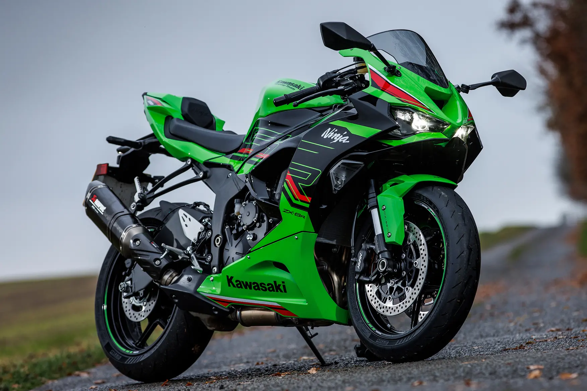

Kawasaki Bikes
Ninja ZX-6R
Ninja 650


Kawasaki is a Japanese motorbike manufacturer that has built an
astounding reputation over the years as one of the best manufacturers in the industry. It is considered one
of the "Big Four" in the Japenese market for manufacturing motorbikes. Kawasaki motorbikes are well known for their powerful
engines and overall reliability, but most importantly, their impressive performance.
Kawasaki is committed to incorporating the latest cutting-edge technology
into their motorbikes including advanced technologies and supercharged models such as the Ninja H2 and Ninja H2R.
Kawasaki motorbikes are well known for their reliability and low maintenance requirements ensuring a
trouble-free ownership. Kawasaki designs often include bold and aggressive designs with eye catching colours
that stand out from the crowd, most notably their signature green. Kawasaki is definitely a brand to consider
when buying a motorbike, as they offer everything you could want, high power, good reliability and endless
fun.
The ZX-6R is one of the longest-serving supersport motorbikes available today,
it has been around for 21 years this year. It has only been outlasted by two other motorbikes, the Honda CB600R
and the Suzuki GSXR600 which we talk about on their corresponding pages of this website if you'd like to learn more about those.
The ZX-6R runs a liquid-cooled 4 stroke engine with a maximum power of 91kW at 13,000 RPM. The 2025 model has an Electric starting
system with a Digital ignition system. The ZX-6R burns 6.1l of petrol/100km which can be considered a lot when compared to smaller engine
motorbikes but is pretty average when it comes to 600cc bikes.
The Ninja 650 ABS is exciting and easy to ride with sporty performance and aggressive styling. It has a comfortable and adaptable upright
riding position which makes the Ninja 650 incredibly comfortable to ride. This bike encapsulates the passion and performance of a sportbike
while delivering the efficiency and agility of a commuter bike. The Ninja 650 comes with a liquid cooled, four stroke parallel twinned cylinder engine with 4 valves
per cylinder delivering a 650cc capacity with a max power of 50.2kW at 8,500 RPM and a 15Liter petrol tank. The parallel twin engine delivers
smooth and responsive performance with exciting mid-range power. This bike is lightweight overall and has a low seat height.